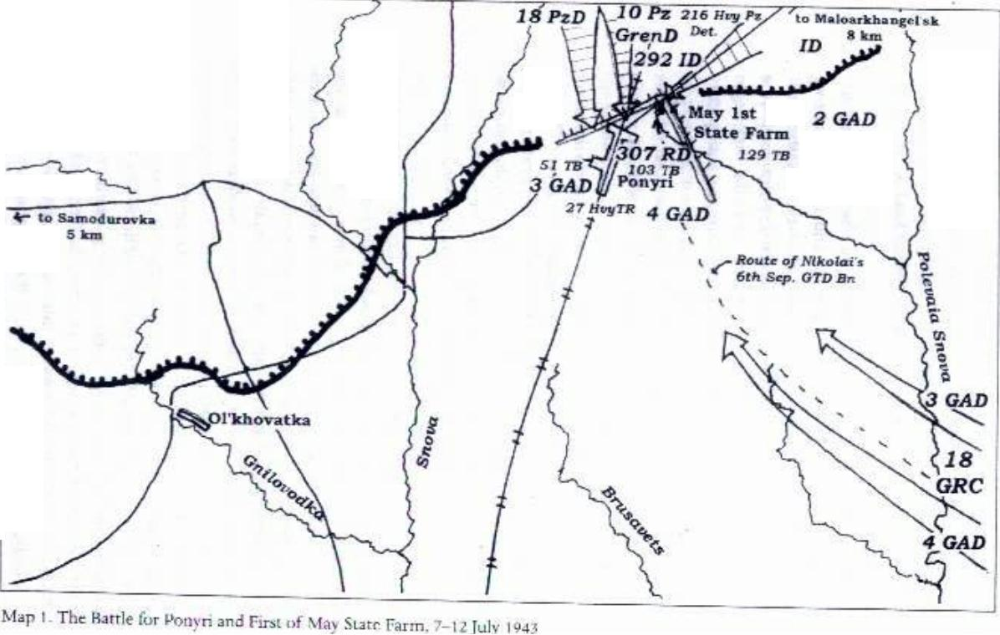

Chương 2

au thất bại tại Stalingrad, quân Đức quyết định đánh một trận báo thù tại một khu vực gần Moscow: mấu lồi Kursk. Trong các trận đánh từ tháng một đến tháng 3 Hồng quân đã chọc thủng tuyến phòng ngự Đức tại khu vực này, một số nơi tiến được tới 150-200km tạo nên một mấu lồi hình bầu dục trên chiến tuyến, hơi thót ở phần cổ do các mấu lồi của quân Đức ở phía bắc tại khu vực Orlovsk và ở phía nam gần Belgorod. Từ những khu vực này và theo hai hướng từ bắc và nam mấu lồi, quân Đức quyết định giáng một đòn hướng về phía Kursk, khép miệng thành một cái túi trong có có cả triệu quân ta. Nếu chúng thành công, con đường đến Moscow sẽ mở toang vì khi đó chúng tôi gần như không có lực lượng nào khác ngăn chúng đến gần Moscow.
Chuẩn bị phòng thủ
Để chuẩn bị chống lại cuộc phản công của quân Đức, Tổng hành dinh ra lệnh thiết lập một hệ thống phòng thủ rộng và nhiều tầng. Năm tuyến công sự được xây dựng, mạnh nhất trong số đó là các tuyến thứ nhất, thứ hai và thứ ba. Mỗi tuyến công sự bao gồm đường hào, hào nhánh, hỏa điểm pháo chống tăng, và ngay tuyến đầu bố trí pháo chống tăng, súng trường chống tăng, mìn chống tăng. Giao thông hào được nối giữa các tuyến phòng thủ với nhau, thêm vào đó các hầm trú ẩn cho bộ binh cũng đang được xây dựng. Điểm cơ bản của kế hoạch là khi xe tăng Đức xông lên sẽ chỉ có
súng chống tăng và các pháo thủ vừa đánh vừa lùi về phía sau, trong khi đó bộ binh và súng máy sẽ rúc xuống hào và chỉ nổi lên khi trận đánh với xe tăng đã qua. Nhiệm vụ của năm tuyến phòng thủ là tiêu diệt càng nhiều càng tốt xe tăng, pháo tự hành và bộ binh địch. Chúng tôi muốn hút khô máu lực lượng tấn công Đức. Chỉ khi quân địch đã kiệt sức và mất khả năng kiểm soát cuộc tấn công chúng tôi mới bắt đầu phản công. Tiểu đoàn chống tăng của chúng tôi vẫn là một phần của Sư đoàn Đổ bộ đường không Cận vệ số 4. Bao gồm ba khẩu đội pháo kéo bằng xe jeep Willy do Mỹ sản xuất, chúng tôi là đơn vị chống tăng cơ động dự bị cho lực lượng pháo binh dưới quyền chỉ huy của Sư đoàn Đổ bộ 4. Súng của chúng tôi là loại pháo chống tăng 45mm nòng dài. Tôi phải giải thích thêm ở đây là những khẩu 45mm của chúng tôi trang bị loại kính ngắm quang học PP-9, nó cho phép chúng tôi ngắm chính xác gần như súng bắn tỉa. Nhờ đó khẩu pháo có thể bắn chính xác vào bất kỳ vị trí đặc biệt nào trên một chiếc xe tăng từ khoảng cách 500m. Ở những chỗ khác trên chiến trường chỉ có loại pháo 45mm nòng ngắn dùng để chống bộ binh và các mục tiêu mềm. Sư đoàn Đổ bộ 4 là một phần của Quân đoàn Bộ binh Cận vệ 18 thuộc Tập đoàn quân 13 của trung tướng N.P.Pukhov dưới sự chỉ huy của Tư lệnh Phương diện quân Trung tâm, đại tướng K.K.Rokossovskii. Tập đoàn quân 13 trấn giữ phần vai phía bắc của mấu lồi Kursk, Quân đoàn Bộ binh Cận vệ 18 giữ một bộ phận chiến tuyến từ phía đông của điểm giao cắt đường sắt tại ga Ponyri. Sư đoàn của tôi, Sư Đổ bộ 4, được bố trí gần hai ngôi làng nhỏ Somovo và Nemchinovka bên bờ sông Sosna. Phía tây là làng Samodurovka. Chúng tôi thường đặt pháo phía sau tuyến đầu 70-100m, nơi bộ binh và các xạ thủ súng máy đang núp. Nếu xa hơn về phía sau những khẩu pháo của chúng tôi trở nên không hiệu quả: Súng 45mm quá nhỏ và yếu. Đôi khi chúng tôi cũng đẩy pháo lên tuyến đầu bắn một phát nhưng sau đó phải lùi lại ngay. Ở Kursk chúng tôi phải chiến đấu giữ tuyến phòng thủ liên miên, nhưng chúng tôi có đến bốn vị trí bắn dự phòng.
Các quân đoàn xe tăng Hồng quân số 9 và 19 cũng đóng trong khu vực này. Trong giai đoạn đầu khó khăn của cuộc phòng ngự, những chiếc xe tăng được đặt trong công sự, chỉ có mỗi nòng pháo thò lên khỏi mặt đất. Trong suốt giai đoạn phòng ngự thụ động ban đầu này chúng tôi có 7 xe tăng trên mỗi km chiến tuyến trong khi có tới 125 súng chống tăng. Tư lệnh Phương diện quân Trung tâm của chúng tôi, Rokossovskii, đã có một quyết định khôn ngoan khi tập trung pháo binh của Phương diện quân tại các khu vực dự đoán quân Đức sẽ tấn công. Ông ta đã rút một nửa số pháo của các tập đoàn quân 60, 65 và 70 để tập trung tại các khu vực phòng thủ của Tập đoàn quân 13, và các khu vực của Tập đoàn quân 48 tại Malo-Arkhangel’sk. Chúng tôi đã có những hoạt động chuẩn bị mạnh mẽ để chờ đón cuộc phản công của quân Đức. Bất cứ khi nào yên tĩnh, đám pháo thủ chúng tôi lại luyện tập. Trong khẩu đội tám người của chúng tôi, mỗi người đều có vai trò của mình. Chỉ huy lựa chọn mục tiêu, loại đạn, số lượng đạn và ra lệnh khai hoả. Pháo thủ ngắm và bắn. Người điều khiển khoá nòng đóng và mở nó trong trường hợp cơ cấu tự động bị hỏng. Người nạp đạn thì nạp đạn vào súng và hất vỏ đạn đi sau khi bắn. Snariadny (theo nghĩa đen là “người đạn”) chuẩn bị đạn để bắn và chuyển nó cho người nạp đạn. “Chuẩn bị đạn” có nghĩa là gì? Là anh ta đặt khoảng cách mà quả đạn sẽ bay trước khi nổ. Iashchechny (theo nghĩa đen là “người hòm”) mở các hòm đạn, lau sạch bụi trên viên đạn, và lấy nó ra. Người tải đạn thì vác đạn từ hòm đến súng. Cả tám thành viên khẩu đội cũng đồng thời là người kéo pháo hoặc thợ sửa chữa. Tôi là pháo thủ trong khẩu đội. Chúng tôi đã tập luyện liên miên các bài tập chiến đấu vì vậy mọi cử động, di chuyển, đặt súng và bắn trở nên nhuần nhuyễn và tự động. Nhưng trước khi cuộc tấn công xảy ra, chúng tôi cũng được huấn luyện như bộ binh thường, nhờ đó chúng tôi có thể tiếp tục chiến đấu trong trường hợp khẩu pháo bị phá huỷ. Người chỉ huy hướng dẫn các bài tập thông thường.
Ví dụ, chúng tôi núp cách khẩu pháo một khoảng nhất định nhưng vẫn trong tầm kiểm soát. Người chỉ huy đi ra, gỡ mũ và ném nó lên thật cao. Sau đó anh ta quát: “Đó là một quả đạn pháo Đức, các anh cần làm gì để bảo vệ mình, để quả đạn không giết chết các anh?” Khi cái mũ bắt đầu rơi xuống, chúng tôi lập tức tản ra và nhào xuống đất với chân quay về phía “điểm nổ” và tay che đầu, vì vậy nếu quả đạn nổ văng mảnh trúng người sẽ chỉ có chân bị thương còn đầu thì vẫn nguyên.
Chúng tôi được đặc biệt chuẩn bị tâm lý cho việc đương đầu với các xe tăng Đức. Một lần chúng tôi hành quân đến một trường huấn luyện đặc biệt với công sự nhìn ra một cánh đồng trống. Từ xa, những chiếc xe tăng bắt đầu lao tới chúng tôi. Chúng tôi nhanh chóng tìm chỗ nấp dưới các đường hào, và những chiếc tăng tiếp tục tiến tới gần hơn và gần hơn nữa. một số đồng chí bắt đầu hoảng sợ, nhảy khỏi chiến hào và bỏ chạy. Người chỉ huy theo dõi xem những ai đang chạy và nhanh chóng buộc họ quay về chiến hào và đảm bảo rằng họ vẫn ở đó. Những cỗ xe tăng xông tới đường hào và, với những tiếng gầm khủng khiếp, vượt qua phía trên. Đây đó một số người bị bụi đất trùm kín người hoặc nhận những vết thâm tím, nhưng chúng tôi nhanh chóng nắm được vấn đề: có thể giấu mình dưới hào trước một cỗ xe tăng, kệ cho nó vượt qua bạn và chỉ cần giữ lấy mạng sống. Nằm xuống sát đáy hào và nhắm mắt lại. Ngay khi con tăng vượt qua, bật ngay dậy và quăng một quả mìn chống tăng vào phần giáp yếu phía sau nó. Những người đã cố bỏ chạy trong lần đầu tiên sẽ bị buộc phải thực hiện lại bài tập cho đến khi họ hoàn toàn quen với những tiếng động và cảm giác khủng khiếp khi một con quỷ thép gầm rú lao qua đầu. Người chỉ huy cũng làm công việc nâng cao tinh thần cho chúng tôi trước trận chiến sắp tới. Mọi người trò chuyện cởi mở về trận đánh sẽ diễn ra như thế nào để chuẩn bị tâm lý cho thực tế có thể thậm chí khắc nghiệt và khủng khiếp hơn tất cả những gì chúng tôi có thể tưởng tượng ra. Có mấy chính uỷ thuộc sư đoàn tôi sau đó trở thành những phó chỉ huy trong những công việc mang tính chính trị này. Chúng tôi đối xử với các chính uỷ theo những cách khác nhau, tức là theo những cách mà họ đáng được hưởng. Chúng tôi đối xử với chính uỷ Kleshchev của mình rất tốt. Ông ta là người rất chân thành, một chỉ huy có kinh nghiệm, thông minh và đứng đắn. Trong các bài học chính trị và và thảo luận nhóm của chúng tôi, ông ta luôn nói với chúng tôi như thể nói với chính những đứa con mình. Nhưng cũng có nhiều tay chính trị viên xấu bụng, cũng giống như những chỉ huy tồi – những tên bạo chúa ti tiện – đó chỉ là do có những con người xấu và tốt mà thôi.
Lời chú của Stuart Britton (Người dịch và biên soạn ra tiếng Anh):
“Hồng quân cũng áp dụng những phương pháp khác để nâng cao tinh thần binh sĩ. Litvin nói rằng mỗi người đều nhận được khẩu phần rượu vodka hàng ngày, chúng được phát vào các bữa sáng. Số lượng tuy nhỏ, chỉ 100g, nhưng những người lính rất vui mừng trước biểu hiện khích lệ này theo đúng tinh thần dân tộc. Thông thường, theo Litvin, khẩu phần này là hơi vượt quá quy định, nhưng trước và trong trận Kursk, khẩu phần vodka được phát đều đặn hàng ngày để nâng cao tinh thần.”
Những trinh sát của chúng tôi mãi vẫn không thể thực hiện mệnh lệnh “tóm lấy một cái lưỡi” (cách nói của Hồng quân, có nghĩa là bắt sống một tù binh) để xác định ngày tháng bắt đầu cuộc phản công của quân Đức. Mãi đến tối ngày 4/7, đại tá Dzhandzhgava, chỉ huy Sư đoàn bộ binh 15 “Sivash”[5] ra lệnh cho một toán trinh sát xuất phát và bằng mọi giá phải bắt được một tù binh, nhờ đó chúng tôi có thể biết khi nào cuộc phản công bắt đầu. Những người lính trinh sát bò lên phía trước trong bóng đêm và gặp một nhóm công binh Đức trong khu vực giữa hai chiến tuyến đang gỡ mìn chống tăng trong một bãi mìn. Bọn Đức cắm những lá cờ nhỏ để đánh dấu những tuyến đường đã dọn sạch mìn cho xe tăng của chúng sử dụng. Đám trinh sát rón rén bao vây chúng và nổ súng, bắn hạ phần lớn bọn Đức. Họ chỉ giữ lại hai tên để bắt sống và lôi về ban chỉ huy sư đoàn vào lúc khoảng 1h sáng. Những tên tù binh Đức ngạo mạn nói: “Tất cả chúng mày sẽ chỉ còn giữ được mạng sống 2h nữa thôi. Sau 2h nữa, tất cả chúng mày sẽ tiêu.” Bọn Đức cũng nói pháo Đức sẽ bắn chuẩn bị trong 2h, và đến 4h sáng những cỗ xe tăng của chúng sẽ bắt đầu cuộc phản công.[6] Các cấp chỉ huy của chúng tôi đã chuẩn bị từ trước một kế hoạch pháo kích phản chuẩn bị trong vòng nửa giờ trước khi đợt pháo chuẩn bị của bọn Đức bắt đầu. Theo kế hoạch đó quân ta sẽ nã pháo đập tan các hoả điểm pháo binh Đức đã xác định được từ trước cũng như các khu vực tập trung xe tăng và bộ binh. Sự chuẩn bị của chúng tôi cho kế hoạch này đã được tiến hành kỹ lưỡng. Khoảng một nửa trong số 1.200 khẩu pháo của chúng tôi đang có mặt tại khu vực này của mấu lồi Kursk đã được chỉ định mục tiêu cho kế hoạch pháo kích phản chuẩn bị. Thông thường, các khẩu pháo cỡ lớn 76mm và 120mm đảm nhiệm việc này. Mỗi khẩu theo quy định có 110 viên đạn cho mỗi trận đánh (cơ số), bao gồm cả đạn xuyên giáp, HE, đạn xuyên, đạn nổ mảnh và đạn khói. Chúng tôi cũng có một ít đạn chống tăng lõi tungsten. Tại Kursk trước khi cuộc tấn công của bọn Đức bắt đầu, mỗi khẩu pháo có ba cơ số đạn cho tất cả các hoả điểm. một được đặt trong tình trạng sẵn sàng sử dụng ngay lập tức, hai được trữ trong hầm gần đó.
Các nhóm trinh sát của chúng tôi đã thâm nhập chiến tuyến Đức để phát hiện và đánh dấu nơi bọn Đức đặt các khẩu đội pháo trên bản đồ. Mặt khác, trong khoảng thời gian ngắn trước khi trận đánh nổ ra, họ không làm phiền chúng nữa vì không muốn chúng thay đổi các vị trí này.
Trận đánh bắt đầu và vết thương của tôi
Hai giờ sáng ngày 5/7/1943, phiên gác của tôi vừa mới bắt đầu tại vị trí đặt súng gần làng Nemchinovka. Thời tiết u ám và đêm vào lúc này đặc biệt tối. Bất ngờ từ xa phía sau chiến tuyến tôi có thể nhìn thấy những ánh chớp lửa. Lẽ ra tôi phải đoán được rằng pháo binh của chúng tôi đang bắn giống như tôi đã biết từ nhiều ngày trước cuộc tấn công sẽ bắt đầu. Nhưng vì một số lý do, ý nghĩ đầu tiên đến với tôi lại là những quả đạn pháo Đức đang rơi quá xa phía sau chiến tuyến của chúng tôi đến mức kỳ cục. Tuy nhiên tôi không nghe thấy tiếng nổ. Nếu bọn Đức đang bắn, chúng tôi lẽ ra phải nhận những quả đạn nổ tung khắp xung quanh chứ. Tôi nghĩ: “Pháo chuẩn bị kiểu gì mà quái lạ thế này?” Trận pháo kích phản chuẩn bị của chúng tôi kết thúc sau ba mươi phút. Ba mươi phút đó đã làm bọn Đức choáng váng và khiến cuộc tấn công của chúng chậm lại. Nó buộc chúng phải mất khoảng hai giờ để thu nhặt những người bị thương vong, kéo những xe cộ bị phá huỷ ra phía sau và tái tổ chức tấn công. Chỉ sau khi hoàn tất những việc đó đợt pháo chuẩn bị của chúng mới bắt đầu. Sự ngạc nhiên mà chúng tôi dành cho chúng vẫn chưa hết. Trận pháo kích phản chuẩn bị gây cho pháo binh của chúng những thiệt hại nặng nề, có vẻ như chúng chỉ có thể tung ra một nửa cú đòn mà chúng tôi dự đoán trước đó vào chiến tuyến quân Nga. Và để phản pháo chúng, bây giờ không chỉ là 600 khẩu nữa mà là toàn bộ 1.200 khẩu pháo của chúng tôi bắt đầu bắn.
Bọn Đức tập trung pháo kích nào khu vực chiến tuyến quân ta đối mặt với Sư đoàn Thiết giáp số 20 Đức. Sư đoàn bộ binh 15 “Sivash” của chúng tôi trấn giữ đoạn chiến tuyến này. Bộ binh của chúng tôi được che chở trong các hầm trú ẩn, nhưng vẫn có khoảng 15% quân số chết ngay trong đợt pháo chuẩn bị của quân Đức. Tất nhiên những căn hầm không thể bảo vệ được tất cả mọi người, nếu một viên đạn pháo bắn trúng hầm, những người núp bên trong sẽ chết. Sau đợt pháo chuẩn bị, những chiếc xe tăng Đức tiến lên, theo sau là bộ binh cơ giới và súng máy. Bộ binh của chúng tôi vẫn náu mình dưới hầm khi bọn Đức đến gần. Quân Đức đánh tới tuyến phòng thủ đầu tiên và xuyên vào khu vực phòng ngự của các trung đoàn tuyến đầu. Bất chấp nhiều xe tăng không bị súng chống tăng quân ta hạ, những người lính bộ binh tuyến đầu vẫn lao ra các tuyến chiến hào và sau đó tấn công chúng từ phía sau bằng mìn chống tăng. Trong ngày đầu tiên của trận đánh, quân Đức tiến được 800m. Nhưng đến tối, những cuộc phản công dữ dội của các đơn vị dự bị đã buộc chúng phải rút lui khỏi một số vị trí. một số nơi quân Đức chỉ tiến được 300m, một số nơi khác thì xa hơn một chút. Nhưng dù thế này hay thế khác, quân Đức cũng đã thực hiện được việc đóng một cái nêm vào tuyến phỏng thủ quân ta. Trận đánh lúc này hết sức ác liệt. Gần làng Samodurovka có một khẩu đội pháo 76mm của quân ta do đại uý Igishevo chỉ huy. Khẩu đội này trong ngày đầu đã tiêu diệt 17 chiếc tăng Đức trong hai cuộc tấn công. Khi những cuộc tấn công này chấm dứt, trong số 32 người và bốn khẩu pháo của khẩu đội khi bắt đầu trận đánh chỉ còn một khẩu pháo chưa bị phá huỷ và ba người còn sống sót. Bọn Đức tấn công tiếp lần thứ ba, khẩu pháo còn lại đã bắn hạ thêm ba chiếc tăng, nhưng chiếc thứ tư đã nghiền nát nó cùng với những người pháo thủ nhỏ bé dưới xích sắt, tiêu diệt nốt khẩu pháo cuối cùng và những người còn lại. Đại uý Igishevo được truy tặng danh hiệu Anh hùng Liên Xô, và kể từ trận đánh đó, làng Samodurovka được đặt tên danh dự là làng Igishevo.
Trong giờ đầu tiên bọn Đức tấn công, tiểu đoàn chống tăng của chúng tôi nhận lệnh di chuyển ngay lập tức về phía trước đến sát nơi xảy ra trận đánh. Vì vậy vào lúc 5h chiều ngày 5/7, tiểu đoàn đến khu vực phòng ngự của Sư đoàn 307 bộ binh và được đặt tạm thời dưới quyền chỉ huy của Sư đoàn này. Tại Ban chỉ huy Sư đoàn, tiểu đoàn trưởng của chúng tôi nhận lệnh yểm hộ cho một trong số các trung đoàn bộ binh của Sư đoàn đang giữ khu vực nông trường quốc doanh 1/5, tiếp giáp Ponyrii về phía đông bắc.

Khoảng nửa đêm ngày 5/7, tiểu đoàn tôi di chuyển vào một vị trí dễ có khả năng bị xe tăng Đức tấn công – một dải đất rộng khoảng 800m dốc xuống hai rãnh hai bên, song song với các đường rãnh khác ở phía đông Ponyri. Khu vực này nằm giữa hai đường rãnh và bao bọc bởi những cánh đồng lúa mạch chưa cắt. Chúng tôi nguỵ trang hoả điểm và thiết lập khu vực bắn. Trong mọi trận đánh, mỗi khẩu pháo trong tiểu đoàn tôi đều được phân công khu vực riêng, nó trùng một chút với khu vực được phân của những khẩu pháo bên cạnh. Điều đó có tác dụng làm cho tất cả pháo không chọn cùng một mục tiêu và làm cho trận chiến đỡ lộn xộn.
Sáng ngày 6/7 trời nhiều mây thấp, bầu trời u ám gây trở ngại cho sự phối hợp của không quân. Khoảng 6h sáng, vị trí của chúng tôi bị tấn công trực diện bởi một lực lượng khoảng 200 tay súng máy và 4 chiếc tăng Đức, có vẻ là loại PzKw IV. Những chiếc tăng dẫn đầu, theo sát phía sau là bộ binh. Bọn Đức đang thử tìm một điểm yếu trên chiến tuyến quân ta. Quân Đức tiến qua cánh đồng lúa mạch chưa gặt thẳng về hướng những hoả điểm của chúng tôi, nhưng chúng không nhìn thấy chúng tôi. Chúng tôi dằn nỗi sợ hãi xuống đáy dạ dầy khi những cỗ xe tăng Đức gầm thét tiến về phía mình, dừng lại mỗi 50 đến 70m để quan sát chiến tuyến quân ta và nã đạn. Trong tiếng ầm ĩ hỗn loạn của trận đánh, chúng tôi hầu như không nghe thấy tiếng đạn pháo Đức nổ nhưng có thể nhìn thấy quả đạn lao xuyên qua không khí thẳng về hướng các hoả điểm quân ta. Nhưng những quả đạn đó đều bay qua đầu chúng tôi một cách vô hại, bọn Đức chưa phát hiện được chúng tôi và có vẻ đang xác định mục tiêu là các vị trí ở phía sau chúng tôi. Đầu gối và chân tôi bắt đầu run lên dữ dội cho đến khi nhận lệnh sẵn sàng chuẩn bị khai hoả. Sự run rẩy chấm dứt và chúng tôi trở nên tự chủ ngay lập tức, giờ chỉ còn khát khao lớn nhất là không để trượt mục tiêu. Khi bọn Đức tiến đến cách chúng tôi khoảng 300m, chúng tôi bắt đầu nổ súng vào những cỗ xe tăng. Khẩu Số một của chúng tôi bắn cháy một chiếc ngay phát đầu tiên, và sau đó hạ tiếp chiếc thứ hai, Khẩu Số 3 và Số 4 cũng phối hợp hạ chiếc tăng Đức thứ ba, chiếc tăng thứ tư bỏ chạy. Cho đến lúc đó chẳng có cỗ xe tăng Đức nào trong khu vực bắn của tôi, tôi bèn chuyển sang đạn nổ mảnh và ngắm vào bọn bộ binh đang tiến tới. Đám lính Đức mang súng máy vẫn ngoan cố tiếp tục tiến lên. Khi chúng đến gần hơn, chúng tôi đã thay xong đạn mảnh và bắt đầu nã đạn vào chúng. Không ít hơn một nửa bọn Đức ngã lăn ra đất, bọn còn lại lùi về chiến tuyến Đức nơi chúng đã xuất phát. Khi chúng tôi nhìn thấy bọn Đức rút lui và một cỗ xe tăng Đức vẫn tiếp tục cháy đùng đùng, ai cũng muốn nhảy lên vui sướng và hét lên “Urrah!” thật to; mọi người đều phấn khích vì thắng lợi. Sau khi đánh lui cuộc tấn công thăm dò của bọn Đức, một thượng sĩ mang bữa sáng của chúng tôi tới kèm 100g vodka để ăn mừng chiến thắng. Chúng tôi bắt đầu chén “súp Mỹ” – một chất lỏng sền sệt làm từ đậu và thịt gà. Khi ăn, chúng tôi không chú ý là bầu trời đang trở nên quang đãng, và đó lúc thích hợp cho không quân hai bên bắt đầu nhập cuộc.
Khoảng 10h sáng, một phi đội 10 chiếc Ju-87 “Stuka” bất thần xuất hiện trên đầu. Chúng tôi gọi chúng là “nhạc sĩ” vì âm thanh rú rít mà chúng tạo ra khi bổ nhào. Đám Stuka có vẻ không nhận ra được mục tiêu nhưng vẫn bay lượn trên chiến tuyến quân ta, và mỗi chiếc thả bốn quả bom 50kg. Chúng tôi chui xuống hầm, nhưng cũng không có quả bom nào ném trúng ụ pháo hay boongke nào, và tiểu đoàn tôi không gặp phải thiệt hại gì. Ba mươi phút sau, một phi đội “nhạc sĩ” khác xuất hiện và bắt đầu một trận oanh tạc mới. Lần này có vẻ như chúng đã xác định được vị trí tiểu đoàn chúng tôi và những trái bom đầu tiên nổ cách 50m-70m phía trước những khẩu pháo. Chiếc cuối cùng bổ nhào đúng vào vị trí tiểu đoàn và bỏ bom. một quả rơi thẳng vào hầm trú ẩn của tôi. Tôi nhìn thấy nó lao tới như nhìn thấy cái chết chắc chắn đang đến gần mà không thể làm gì để cứu lấy bản thân: Không đủ thời gian. Để lao sang một căn hầm khác cần 5-6 giây trong khi quả bom được thả từ gần sát mặt đất nên chỉ 1-2 giây là rơi đến đất – và đến tôi.
Trong vài giây ngắn ngủi khi tôi nhìn quả bom lao xuống, toàn bộ quãng đời trước đây lướt qua đầu óc tôi. Mọi thứ dường như xảy ra trong một đoạn phim quay chậm. Tôi rất không muốn chết vào tuổi hai mươi. Tôi thoáng nghĩ đến việc cầu xin Chúa cứu rỗi cuộc đời mình, nhưng sau đó tôi nhớ ra rằng mình là một đoàn viên Komsomol và vì thế tôi không thể làm những việc đại loại như cầu khấn. Ngay trước khi quả bom rơi xuống, tôi lăn về phía trước căn hầm nhỏ bé của mình và dùng hai tay che mặt. Khi mặt tôi quay lên trên, trong khoảnh khắc tôi nhận thấy một trận bão bụi đất đang lao thẳng vào mình từ khoảng cách độ 12m phía trên. Ngay khi ngừng lăn, tôi nghe thấy tiếng nổ, ngửi thấy mùi thuốc súng TNT kinh tởm, và cảm thấy hai cú đánh mạnh vào đầu. Tôi thấy đầu mình như bị xé toạc ra. một ý nghĩ thoáng qua: “Chết mà không đau là thế nào!”
Quả bom nổ rất gần hầm và tôi bị chôn vùi trong đống đất đá lùng nhùng. Tiểu đoàn trưởng Bondarev và các đồng chí của tôi phải đào bới điên cuồng để lôi tôi lên khỏi mặt đất ngay khi trận oanh tạc kết thúc. Họ lôi được đến ngang lưng và nghĩ là tôi đã chết vì khi họ nhẹ nhàng nâng đầu tôi lên và thả ra, đầu tôi lập tức gục xuống. Tôi lúc đó chỉ bị ngất. Họ cố gắng lay cho tôi tỉnh lại ba đến bốn lần. Cuối cùng một người lắc tôi một cú mạnh và tôi tỉnh lại. Khi tỉnh tôi nhớ đến cảm giác đầu mình bị xé toạc ra và nghĩ: “Xin đủ, mình còn sống!”
Tôi bắt đầu nhìn mọi vật xung quanh nhưng tất cả đều hoá thành màu đỏ. Mặt tôi đầy máu. một đồng chí của tôi nâng tay tôi lên mà lắc và tôi có thể nhìn thấy thêm màu trắng. Tay tôi cũng đầy máu. Máu thậm chí chảy ồng ộc ra từ tai và mũi nhưng tôi không quan tâm. Tôi quay đầu và nhìn thấy đạn pháo đang nổ ngay gần – những cột sáng mầu da cam, và 3m hay 4m phía trên chúng là những đụn khói đen đang bốc lên ngùn ngụt. một vụ nổ, rồi hai rồi ba – tôi ngắm nhìn chúng một cách vui thích và nghĩ: “Đẹp thật, y như phim.” Tôi nhìn chúng và cảm thấy sung sướng rằng mình còn sống, rằng tôi có thể nhìn, và rằng tôi có thể nghĩ nữa.
Đột nhiên tôi thấy một trong các đồng chí của mình bắt đầu chạy, rồi người thứ hai và thứ ba – chính là người đã moi tôi ra khỏi ngôi mộ chôn sớm. Tôi nhìn lên và thấy phía trước là cả tá Junker đang bay đến. Tôi nghĩ: “Lần trước mình sống sót nhưng lần này thì chúng nó giết mình mất.” Chẳng hiểu sao tôi chồm được khỏi đống đất đá lúc này vẫn còn đè lên chân và phi ra khỏi chiến hào. Tôi chạy thẳng về phía những chiếc Junker và vừa chạy vừa ước lượng xem những quả bom sẽ rơi ở đâu khi thấy chúng thả bom, nhờ đó biết được mình nên núp vào chỗ nào. Tôi chạy và chạy, sau đó nhào xuống một cái hố nhỏ trên mặt đất. Thành hố rung lên vì tiếng nổ và tôi bị đất cát tưới đầy người. Tôi nằm đó, và tôi đếm: “1, 2, 3…”. Trong số các nhiệm vụ mà tôi phải làm có việc đếm số bom ném vào vị trí tiểu đoàn để làm báo cáo sau trận đánh. Bọn Đức thường thả 6, 8 hoặc 12 quả bom. Chúng đã oanh tạc chúng tôi bằng loại bom nổ mảnh chống bộ binh cỡ nhỏ – 50kg. Loại bom này có một ngòi chạm nổ sẽ kích nổ trái bom ngay khi chạm đất, khi nó nổ, mảnh bom bay tứ tung đâm xuyên mọi thứ xung quanh và thậm chí cắt trụi cỏ trong khu vực nổ. Trận bom kết thúc, thành hố ngừng rung, bỗng nhiên tôi cảm thấy có gì đó lục đục bên dưới. Tôi nhận ra có người đang nằm dưới tôi. Cái hố này được đào để phục vụ thông tin đường sắt, chỉ nhỏ vừa đủ chỗ cho một thông tín viên. Cứ 1,5km lại có một trạm thông tin như vậy. Công việc của thông tín viên là nằm ghé tai vào đó, tức là nghe. Tiếng động trên đường dây mà ngừng có nghĩa là dây đứt, anh ta sẽ phải trèo lên khỏi hố đi tìm điểm đứt để sửa.
Tôi nhìn người thông tín viên và có thể thấy môi anh ta chuyển động. Tôi giải thích với anh ta rằng tôi chẳng nghe thấy gì cả. Chỉ đến lúc này tôi mới bắt đầu hiểu mình đã bị điếc. Tôi trèo lên khỏi hố và ngồi xuống bên cạnh. Tiểu đoàn trưởng đến gần tôi và qua khẩu hình tôi hiểu ông đang hỏi: “Có sao không?”. Tôi cố gắng trả lời “Mọi thứ vẫn ổn”, nhưng khi mở mồm nói, lưỡi tôi xuôi xị một cách vô dụng và tôi không thể làm nó hoạt động trở lại – thêm một hậu quả nữa của sự chấn động. Ông ta giơ tay kéo tôi dậy, đưa tôi ngồi vào ghế phải xe của ông và chở tới trạm xá. một bác sĩ kiểm tra tôi ở đó và viết một cho tôi một tờ giấy: “Đừng lo – trong vòng 4h đến 6h lưỡi của cậu sẽ trở lại vị trí phù hợp với nó, nhưng đừng cố nói trước khi bác sĩ cho phép nếu không lưỡi cậu có thể không chịu quay về đúng chỗ đâu.” Ông bác sĩ kê đơn thuốc giảm đau cho tôi và nói: “Loại thuốc tốt nhất cho cậu là thời gian, thời gian, thời gian.” Chúng tôi quay lại tiểu đoàn chống tăng và được đưa lại vào trạm xá tiểu đoàn. Tumarbekov (anh ta cũng bị chấn động do trận bom) và tôi ngồi cạnh đầu bếp giúp gọt khoai tây và giữ lửa trong bếp lò. Đêm đó, khoảng 2h sáng, tôi tỉnh dậy và cảm thấy mồm không thể ngậm lại được. Bên trong đó tưởng như có cả một gia đình nhím đang làm ổ, đó là vì cái lưỡi của tôi đang liệt và trên đó những mụn nước bắt đầu vỡ ra nhức nhối. Sau hai hay ba ngày, những miếng rộp đó bắt đầu tuột khỏi lưỡi. Vào ngày thứ ba khả năng nghe của tôi bắt đầu trở lại. Tôi đã có thể nghe thấy tiếng máy bay ném bom. Ngày thứ năm, bác sĩ cho phép tôi nói thử hai từ và khả năng nghe bắt đầu tiến triển. Sau một tuần rưỡi tôi đã nghe tốt trở lại nhưng vẫn nói lắp. Phải đến ngày 16-17/7 tôi mới quay trở lại khẩu đội của mình. Bây giờ không còn ở Ponyri nữa mà đã tiến tới nơi trước đây là vị trí xuất phát tấn công của bọn Đức. Tôi luôn luôn hối tiếc về vết thương vào ngày 6/7 đó. Tôi tự thẹn là đã chỉ tham chiến trong có hai ngày đầu của cuộc tấn công. Tiểu đoàn tôi được đặt dưới sự chỉ huy của Sư đoàn bộ binh 307 cho đến hết ngày 9/7, đó là lúc Sư đoàn 4 Đổ bộ đường không lên thay vị trí Sư 307 ở Ponyri và cúng tôi quay trở lại đội hình sư đoàn mình.
Lời bình của Stuart Britton:
“Sau khi Litvin bị thương và trong thời gian ông dưỡng bệnh, trận chiến vẫn tiếp diễn ác liệt khi Tập đoàn quân 9 Model gây sức ép mạnh để xuyên thủng tuyến phòng ngự dày đặc của quân Nga. Litvin đưa ra một bức phác họa chung về trận đánh và nhấn mạnh những nhiệm vụ của sư đoàn mình cũng như đơn vị chống tăng của ông. Thật đáng tiếc, vết thương ngày 6/7 của Litvin đã không cho phép chúng tôi có được một thông tin tận mắt về trận đánh ở Poryni.”
Các đồng chí của tôi cho biết các tin tức về trận đánh và những sự kiện mà tôi đã bỏ qua. Hôm 8/7, bọn Đức tiến được trên toàn tuyến khoảng 12km và đã chiếm được Poryni. Sư đoàn Đổ bộ đường không 4 của chúng tôi được ném vào Ponyri với lời dặn: “Các anh là những người lính mang danh hiệu Cận vệ – các anh được lệnh đẩy lùi bọn Đức ở đó và khôi phục lại tuyến phòng ngự.” Tối ngày 8/7, các trung đoàn 7 và 9 Đổ bộ đường không áp sát ga Ponyri ở khoảng cách 600m và chuẩn bị tấn công. Sáng hôm sau, 9/7, các trung đoàn này tấn công và chiếm lại được nhà ga và khu trường học ở giữa ga. Họ xông đến tận rìa phía bắc ga, ở đó họ dừng lại, hoàn thành mục tiêu của ngày hôm đó. Tuy nhiên bọn Đức lập tức phản công bằng một tiểu đoàn xe tăng và bộ binh cơ giới, chúng đã cắt rời tiểu đoàn một trung đoàn 9 (chỉ huy đại úy cận vệ A.P.Zhukov) khỏi đội hình quân ta. Tiểu đoàn một chọn cách dừng lại giữ chặt vị trí và thế là trận ác chiến điên cuồng diễn ra. Các đồng chí của tôi đã chiếm được một khẩu đội 6 khẩu đại bác chống tăng Đức. Họ quay chúng lại các ông chủ cũ và hạ sáu chiếc tăng Đức. Hầu như toàn bộ tiểu đoàn một đã chết ở đó. Chỉ những người đã bị thương và được mang ra khỏi bãi chiến trường từ trước là còn sống sót. Cả Zhukov và chính trị viên tiểu đoàn đều chết trong vòng vây và được truy tặng danh hiệu Anh hùng Liên Xô. Họ là những người đầu tiên được phong Anh hùng của sư đoàn tôi. Cho đến năm 1989 ở đó vẫn có một đài kỷ niệm họ. Sau ngày 9/7 bọn Đức không tiến thêm được 1km nào nữa. Trong ba ngày chúng tôi chặn đứng các cuộc tấn công của chúng và đánh bật chúng khỏi những vị trí đã xuyên được vào tuyến phòng ngự Nga. Ngày 12/7, Phương diện quân Briansk mở cuộc tổng phản công ở khu vực phía bắc Orel, nơi bọn Đức đang chiếm giữ một mấu lồi sâu vào chiến tuyến quân ta giống như mấu lồi của ta ở Kursk. Cuộc phản công của Hồng quân khiến Tập đoàn quân 9 của Model phải rút khỏi các cuộc tấn công, và cùng với Phương diện quân Briansk chúng tôi bắt đầu dồn bọn Đức quay trở lại. Đó chính là nơi tôi đã quay lại với những đồng chí của mình ở mặt trận.
Các đồng chí của tôi cho biết các tin tức về trận đánh và những sự kiện mà tôi đã bỏ qua. Hôm 8/7, bọn Đức tiến được trên toàn tuyến khoảng 12km và đã chiếm được Poryni. Sư đoàn Đổ bộ đường không 4 của chúng tôi được ném vào Ponyri với lời dặn: “Các anh là những người lính mang danh hiệu Cận vệ – các anh được lệnh đẩy lùi bọn Đức ở đó và khôi phục lại tuyến phòng ngự.” Tối ngày 8/7, các trung đoàn 7 và 9 Đổ bộ đường không áp sát ga Ponyri ở khoảng cách 600m và chuẩn bị tấn công. Sáng hôm sau, ngày 9/7, các trung đoàn này tấn công và chiếm lại được nhà ga và khu trường học ở giữa ga. Họ xông đến tận rìa phía bắc ga, ở đó họ dừng lại, hoàn thành mục tiêu của ngày hôm đó. Tuy nhiên bọn Đức lập tức phản công bằng một tiểu đoàn xe tăng và bộ binh cơ giới, chúng đã cắt rời tiểu đoàn một trung đoàn 9 (chỉ huy đại úy cận vệ A.P.Zhukov) khỏi đội hình quân ta. Tiểu đoàn một chọn cách dừng lại giữ chặt vị trí và thế là trận ác chiến điên cuồng diễn ra. Các đồng chí của tôi đã chiếm được một khẩu đội 6 khẩu đại bác chống tăng Đức. Họ quay chúng lại các ông chủ cũ và hạ sáu chiếc tăng Đức. Hầu như toàn bộ tiểu đoàn một đã chết ở đó. Chỉ những người đã bị thương và được mang ra khỏi bãi chiến trường từ trước là còn sống sót. Cả Zhukov và chính trị viên tiểu đoàn đều chết trong vòng vây và được truy tặng danh hiệu Anh hùng Liên Xô. Họ là những người đầu tiên được phong Anh hùng của sư đoàn tôi. Cho đến năm 1989 ở đó vẫn có một đài kỷ niệm họ. Sau ngày 9/7 bọn Đức không tiến thêm được 1km nào nữa. Trong ba ngày chúng tôi chặn đứng các cuộc tấn công của chúng và đánh bật chúng khỏi những vị trí đã xuyên được vào tuyến phòng ngự Nga. Ngày 12/7, Phương diện quân Briansk mở cuộc tổng phản công ở khu vực phía bắc Orel, nơi bọn Đức đang chiếm giữ một mấu lồi sâu vào chiến tuyến quân ta giống như mấu lồi của ta ở Kursk. Cuộc phản công của Hồng quân khiến Tập đoàn quân 9 của Model phải rút khỏi các cuộc tấn công, và cùng với Phương diện quân Briansk chúng tôi bắt đầu dồn bọn Đức quay trở lại. Đó chính là nơi tôi đã quay lại với những đồng chí của mình ở mặt trận.